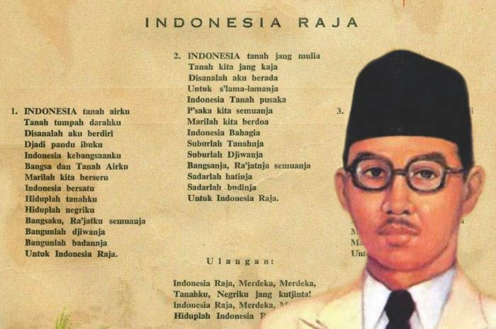

Jakarta 1927. Suhu politik memanas lagi. Anak-anak muda menggeliat dan kembali bergiat.
Penggagas Kongres Pemuda I, yaitu Moh. Jamin, Tabrani, Soegondo Djojopuspito sedang merencanakan Kongres Pemuda Indonesia II.
Soepratman, yang kala itu bekerja sebagai wartawan harian terkemuka Sin Po, sering menemui mereka di markas Indonesische Clubgebouw, di Jalan Kramat Raya 106. Ia lalu ikut menyebarkan ide-ide kemerdekaan dengan menjadi agen sejumlah majalah pergerakan seperti Persatoean Indonesia, Soeloeh Indonesia Moeda, Soeloeh Rakjat Indonesia dan Indonesia Raja.
Sebelumnya, ketika masih di Makassar dan tinggal bersama kakaknya, Soepratman telah menyerap konsep perjuangan Tiga Serangkai: Douwes Dekker, Suwardi Suryaningrat (KH Dewantara) dan Dr. Cipto Mangunkusumo dari berbagai surat kabar yang dibacanya. Menyadari bahwa pusat perlawanan ada di Jawa, Soepratman memutuskan hijrah ke Jakarta tahun 1924 dan menjadi wartawan agar pergaulannya dengan pemuda-pemudi nasionalis kian luas.
Suatu hari, ketika mereka sedang berbincang di atas rerumputan di depan Stasiun Gambir, Tabrani mengatakan pada Soegondo Djojopuspito bahwa Soepratman sudah menciptakan lagu, yang dikatakannya sendiri, merupakan lagu kebangsaan. Meskipun belum pernah mendengar, namun semuanya berjanji akan memberi kesempatan pada Soepratman memainkan lagu tersebut dalam Kongres Pemuda II.
28 Oktober 1928. Malam menjelang penutupan Kongres Pemuda II.
Soepratman berangkat lebih awal. Berpakaian rapi dalam balutan stelan jas putih dan sepatu putih mengkilap. Mengenakan peci hitam dan biolanya berada dalam genggaman erat tangannya.
Ia membagikan lirik lagu Indonesia Raya yang ditulisnya di atas kertas kepada para peserta kongres. Sebagian besar yang hadir adalah juga anggota pandu (pramuka). Mereka senang karena ada kalimat “jadi pandu ibuku” dalam syair, sekaligus cemas, karena keseluruhan syairnya dapat memunculkan ‘konflik yang tidak perlu’ dengan pemerintah Belanda. Setelah berembuk, akhirnya disepakati bahwa Soepratman tetap bisa membawakannya. Secara instrumental. Tanpa lantunan lirik.
Sesudah hasil konvensi dibacakan, setelah beberapa penggagas berpidato, sebelum Kongres Pemuda II resmi ditutup, Soegondo Djojopuspito mempersilakan Soepratman maju ke depan untuk mempersembahkan Ode gubahannya.
Pemuda berusia 25 tahun itu tampil dan menggaungkan nada demi nada.
Semua mengikuti dalam hening. Dalam kekhidmatan yang khusyuk.
Secara musikal, Soepratman memberi warna yang berbeda pada lagunya. Di dua quatrain pertama, yang mendeskripsikan Indonesia sebagai tanah air pujaan dan kebanggaan, nada-nadanya terdengar datar dan agung. Memasuki enam baris berikutnya, yaitu bagian puji syukur, doa serta janji, nada-nadanya berubah takzim dan mendayu kalbu. Pada quatrain ulangan (reffrain), nada-nadanya dilonjakkan menjadi dinamis, bergemuruh dan menggelegar.
Tak ayal, tepuk tangan membahana selepas Soepratman mengakhiri petikan dawai biolanya.
Saat itu juga, secara aklamasi, Indonesia Raya, diterima dan disetujui sebagai Lagu Kebangsaan.

Lahir di hari pasaran Jawa, Wage, 9 Maret 1903, sebagai anak ketujuh dari sembilan bersaudara, Soepratman mendapat tambahan nama Rudolf, karena kecemerlangannya berlakon sebagai Rudolf dalam sebuah pentas drama. Soepratman memperoleh ketrampilan bermusik dari kakak iparnya, Willem Van Eldik. Sejak itulah, ia menjadikan musik sebagai caranya berbahasa dalam merefleksikan nasionalismenya. Dari petikan senar biolanya, Soepratman menghasilkan Mars KBI (Kepanduan Bangsa Indonesia), Ibu Kita Kartini dan Di Timur Matahari.
Indonesia Raya sendiri diciptakan Soepratman tahun 1924.
Setahun setelah Kongres Pemuda II, Soepratman bertemu Soekarno, yang kelak menjadi Presiden. Soepratman menyerahkan teks lagu Indonesia Raya. Soekarno membacanya dan Indonesia Raya pun berkumandang kembali pada Kongres PNI kedua di bulan Desember 1929. Kali ini, peserta kongres berdiri dan ikut menyanyikannya mengikuti iringan biola Soepratman. Kongres yang diketuai Soekarno ini juga menerima, menyetujui dan kemudian menetapkan Indonesia Raya sebagai lagu kebangsaan.
Sungguh sebuah proses perumusan Lagu Kebangsaan yang cepat dan mulus.
Mulai dari situ, dengan cepat teks lagu Indonesia Raya tersebar luas, sampai ke pelosok Nusantara. Indonesia Raya yang susunan liriknya, dalam kesusasteraan, termasuk sebuah Soneta (sajak 14 baris) menjadi seloka sakti yang menyatukan dan merekatkan. Membuat Belanda, yang selalu ingin memecah-belah, tiba-tiba gerah dan menyadari betapa besarnya pengaruh Indonesia Raya bagi rakyat Indonesia. Lagu itu menyulut api perjuangan dan menjadi cambuk semangat bagi terwujudnya kemerdekaan.
Kata ‘moelia’ di bait reffrain bahkan diganti dengan ‘merdeka’. Sebuah pekik yang teramat sensitif di telinga Belanda. Maka pada tahun 1930, Indonesia Raya dilarang untuk diperdengarkan di manapun dan dalam kesempatan apapun. Gubernur Jenderal Jonkheer de Graeff beralasan, “Untuk apa ada Lagu Kebangsaan bagi sebuah bangsa yang, toh, tidak ada?”
Soepratman ditangkap dan diinterogasi. Larangan dan tekanan membuat gelombang protes malah bermunculan di sana-sini. Tak ada pilihan lain bagi pemerintah Hindia Belanda selain berkompromi. Soepratman dibebaskan dan Indonesia Raya boleh dinyanyikan, asalkan di ruangan tertutup, dengan maksud menjaga ketertiban dan keamanan.
Tahun 1938, Soepratman menyiarkan lagu ciptaannya berjudul Matahari Terbit bersama pandu-pandu di Malang, yang membuatnya ditangkap lagi oleh Belanda dan dipenjarakan di Kalisosok, Surabaya.
Dan pada tanggal 17 Agustus, 1938, di hari Wage sesuai hari kelahirannya, Soepratman wafat akibat penyakit paru-paru, di kediaman kakaknya di Jalan Mangga No 21, Surabaya.
Tujuh tahun kemudian di tanggal yang sama dengan hari wafatnya, 17 Agustus 1945, Indonesia merdeka. Soepratman tak pernah melihat bangsa yang dicintainya ini berhasil mencapai kehendak tertingginya sebagai negara berdaulat dan Indonesia Raya menjadi lagu pengiring ketika Sang Saka Merah Putih dikibarkan pertama kalinya, sesudah pembacaan proklamasi kemerdekaan.
Soepratman adalah seorang visioner. Dengan kesadaran penuh dan rasa percaya diri yang tinggi, Soepratman jelas-jelas menulis Lagu Kebangsaan di bawah judul Indonesia Raya pada kertas yang dibagikannya di Kongres Pemuda II. Indonesia Raya diterima sebagai Lagu Kebangsaan jauh sebelum Indonesia ada sebagai negara. Menjadikan Indonesia telah memiliki Lagu Kebangsaan ketika merdeka masih berupa kosa kata impian, harapan, angan dan sesuatu yang beyond imagination. Soepratman menjadikan musik sebagai kanalnya ketika lepas dari penjajahan adalah suara bangsa yang harus digaungkan. Keyakinan tentang kemerdekaan tak pernah surut dalam diri Soepratman, seperti dituturkannya, “Nasibkoe soedah begini. Inilah jang disoekai oleh Pemerintah Hindia Belanda. Biarlah saja meninggal, saja ichlas. Saja toch soedah beramal, berdjoeang dengan tjarakoe, dengan biolakoe. Saja jakin Indonesia Pasti Merdeka”.